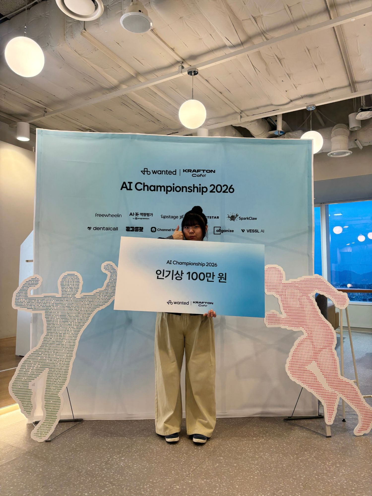
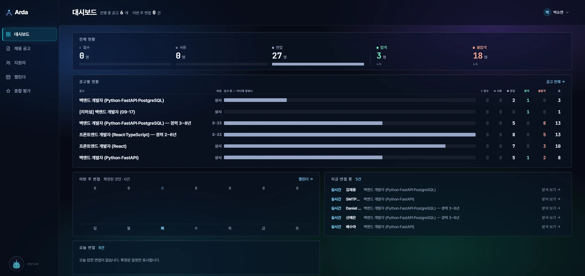
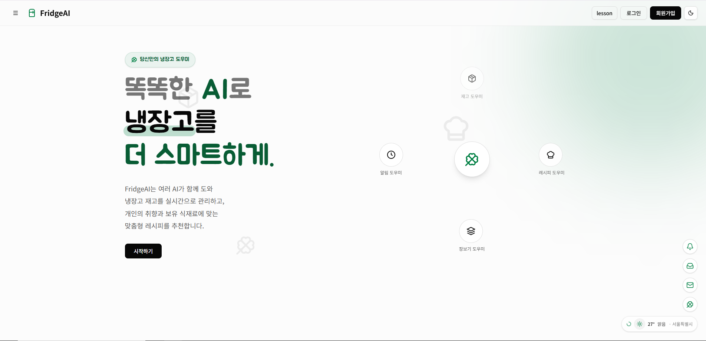
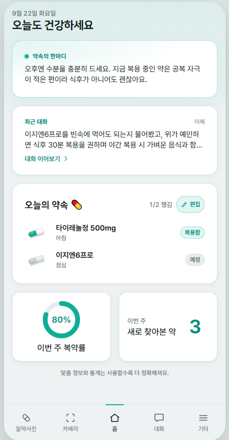
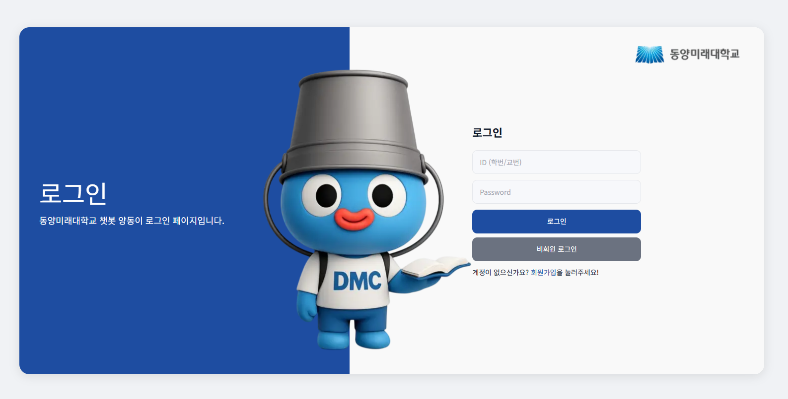

cloverky
.cloud
원티드 AI Championship 2026
인기상 🏆

CLICK ME!
🍀 아래로 스크롤하면 잎이 내려앉아요
건너뛰기 →
cloverky
.cloud
소개
프로젝트
기술 스택
연락처

🏆 원티드 AI 대회 인기상
Arda
AI 채용 관리 · 팀 SEUK

KDT 개인작품
FridgeAI
AI 냉장고 관리 · 레드햇 과정

문체부 공모전 출품
Yaksok
알약 인식 · 복약 상담

졸업작품
Yangdongi
동양미래대학교 학사 챗봇